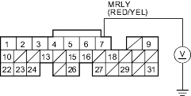

DTC 34: ECM/PCM Power Source Circuit Unexpected Voltage
- Reset the ECM/PCM, refer to the '01 Civic Shop Manual on this CD (see page 11-468).
- Turn the ignition switch OFF.
- Wait 5 seconds.
- Turn the ignition switch ON (II).
Is the MIL on and does it indicated DTC 34?
YES - Go to step 5.
NO - Intermittent failure, system is OK at this time. Check for poor connections or loose wires at the No. 6 ECU (ECM/PCM) (15A) fuse in the under-hood fuse/relay box and at the ECM/PCM. 
- Turn the ignition switch OFF.
- Disconnect ECM/PCM connector E (31P).
- Measure voltage between ECM/PCM connector terminal E7 and body ground.
ECM/PCM CONNECTOR E (31P)

Wire side of female terminals
Is there battery voltage?
YES - Go to step 11.
NO - Go to step 8.
- Remove the glove box.
- Remove the PGM-FI main relay 1 (A).

- Check for continuity between ECM/PCM connector terminal E7 and body ground.
ECM/PCM CONNECTOR E (31P)
Wire side of female terminals
Is there continuity?
YES - Repair short in the wire between the ECM/PCM (E7) and the PGM-FI main relay 1.
NO - Replace the PGM-FI main relay 1.
- Reconnect ECM/PCM connector E (31P).